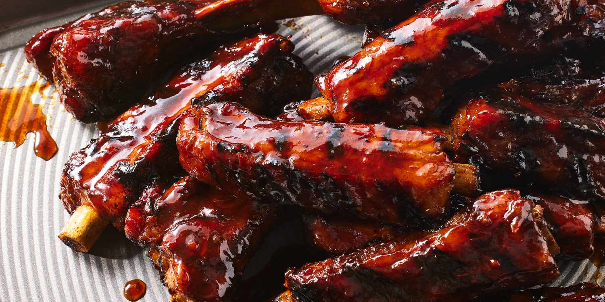

The Undertaker's Dark and Sinister BBQ Ribs
Back to the ring...

Greetings once again, mere mortals. This time, I emerge from the depths to bestow upon you my eerie and haunting recipe for Dark and Sinister BBQ Ribs.
These ribs will have you savoring the flavors of the underworld. Prepare yourself for a meal that's as brooding as my legendary presence.

Ingredients:
For the Ribs:
- 2 racks of pork baby back ribs
- 2 tablespoons brown sugar
- 2 teaspoons smoked paprika
- 2 teaspoons garlic powder
- 2 teaspoons onion powder
- 1 teaspoon salt
- 1 teaspoon black pepper
- 1/2 teaspoon cayenne pepper (adjust to your level of darkness)
- 1/2 cup apple cider vinegar
- 1/2 cup water
For the BBQ Sauce:
- 1 cup ketchup
- 1/2 cup apple cider vinegar
- 1/4 cup molasses
- 2 tablespoons brown sugar
- 2 teaspoons smoked paprika
- 1 teaspoon onion powder
- 1 teaspoon garlic powder
- Salt and black pepper to taste
Instructions:
Prepare the Ribs:
- Begin by removing the membrane from the back of the ribs. Use a knife to gently lift it from one corner and then pull it off. This step is crucial for tender ribs.
- In a small bowl, mix the brown sugar, smoked paprika, garlic powder, onion powder, salt, black pepper, and cayenne pepper. This will be your rub.
- Rub the spice mixture all over the ribs, ensuring they are well-coated with the dark and sinister flavors.
- Place the ribs in a large, heavy-duty aluminum foil packet. Pour the apple cider vinegar and water into the packet. Seal it tightly and let the ribs marinate in this dark bath for at least 2 hours in the refrigerator. Longer if you dare.
Prepare the BBQ Sauce:
- In a cauldron... I mean, a saucepan, combine the ketchup, apple cider vinegar, molasses, brown sugar, smoked paprika, onion powder, garlic powder, salt, and black pepper.
- Bring the sauce to a simmer over medium heat, stirring occasionally. Let it simmer for 10-15 minutes until it thickens and darkens to your liking.
The Dark Ritual:
- Preheat your grill to medium-high heat. When it's ready, remove the ribs from the foil packet and place them directly on the grill.
- Grill the ribs, turning and basting them with the dark BBQ sauce, until they are dark and sinisterly tender. This will take about 15-20 minutes, but watch them closely.
- Once they are darkened to perfection, remove the ribs from the grill and let them rest for a few minutes.
Serve with Dark Delight:
- Slice the ribs into individual pieces, and serve them on a platter.
- Drizzle some extra BBQ sauce over the top for that extra dark and sinister flavor.
Prepare to feast, but remember, these Dark and Sinister BBQ Ribs come with a price. Enjoy, if you dare!